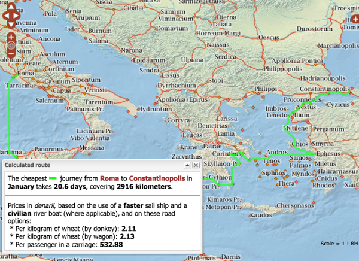

From the original site
This archived piece preserves its original text and historical context.
ORBIS 2012 (v1)
Relying on a tremendous amount of original research, prior work by archaeologists and historians, and a good deal of software development, ORBIS v1 gave users the ability to explore movement of people and goods in the Roman World.

What went right
The most obvious success was the route-finding functionality, which proved tremendously popular not only with digital humanities scholars but with the general Internet. The route-finding wasn't even the goal of the project, which was to produce a network amenable to deformation in distance cartograms.
A less visibile but equally important success was the documentation both on the site and in papers dealing with the design and implementation of the project. While tedious and less fun than the data visualization, mapping and data modeling components, this added considerable value and credibility to the project.
What went wrong
The entire ORBIS project was inspired by Tom Carden's dynamic distance cartogram of the London Subway System. However, the state of pgRouting meant that we couldn't dynamically calculate one-to-many paths. As a result, the dynamic distance cartogram component of ORBIS was limited and poorly implemented.
The next version would have
See ORBIS v2.
Trivia
ORBIS received 80,000 visits in one day when it got near the top on Reddit, reaching a high of 800 simultaneous users. This caused the systems administrator to text me asking if we were being subjected to a DDOS attack.
The dynamic distance cartogram and the route visualization were my first pieces of production D3. Until that point, I'd been playing around with Protovis.